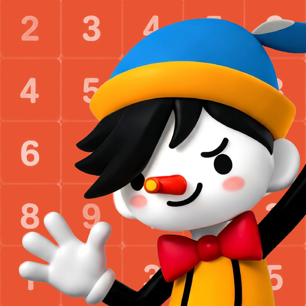

TAPtoTEN — 새 디자인 이미지 7장
각 이미지 아래 PNG 다운로드를 누르면 돼. 7장 모두 1080×1920 PNG이며, 그림을 늘여 만든 이미지가 아니라 실제 게임을 이 크기로 촬영했어. 원본 파일은 이 HTML과 같은 폴더에 있어.
Android 화면 방식을 Chrome에서 모의 실행한 촬영본이고, 실제 휴대폰 캡처는 아니야. 이전 스토어 이미지들은 그대로 보존했어.
7장 한 번에 다운로드 — ZIP
새 스토어 아이콘

아이콘 PNG 다운로드 — 512×512
전후 비교·검증 기록 보기 · 촬영 조건·원본 해시
기록·튜토리얼 진도는 촬영용 초기 데이터야. 7번 GOOD TRY는 실제 ENDLESS에서 합 10을 한 번 만든 뒤 보드가 찰 때까지 진행한 결과이며, 기존 영상의 0.8초 장면을 정지해서 촬영했어. AAB 생성·push는 하지 않았어.